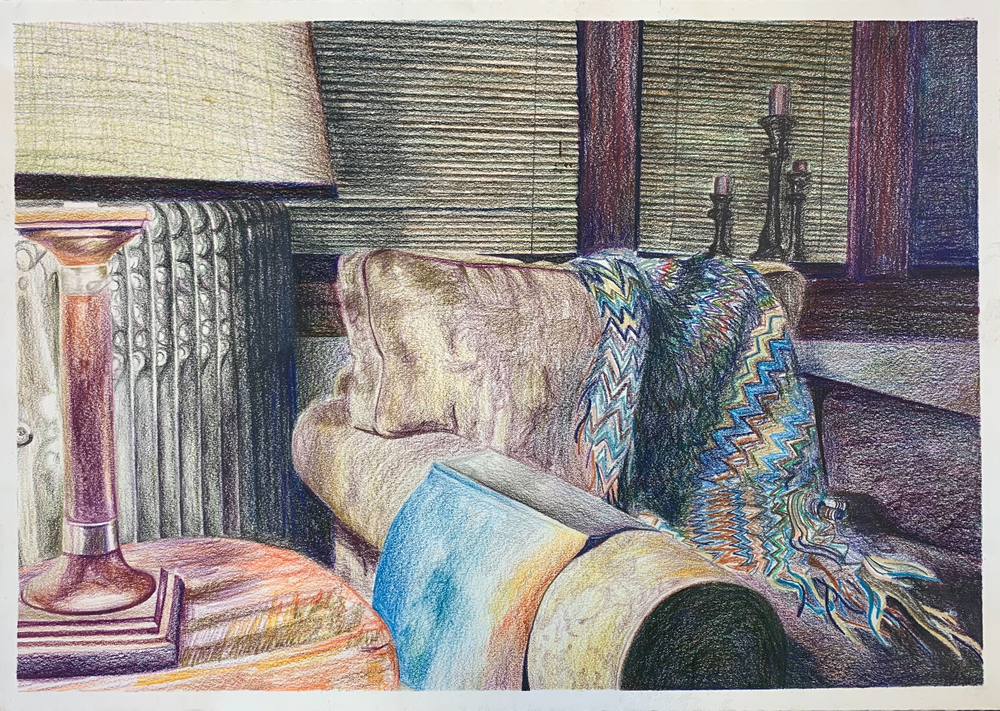
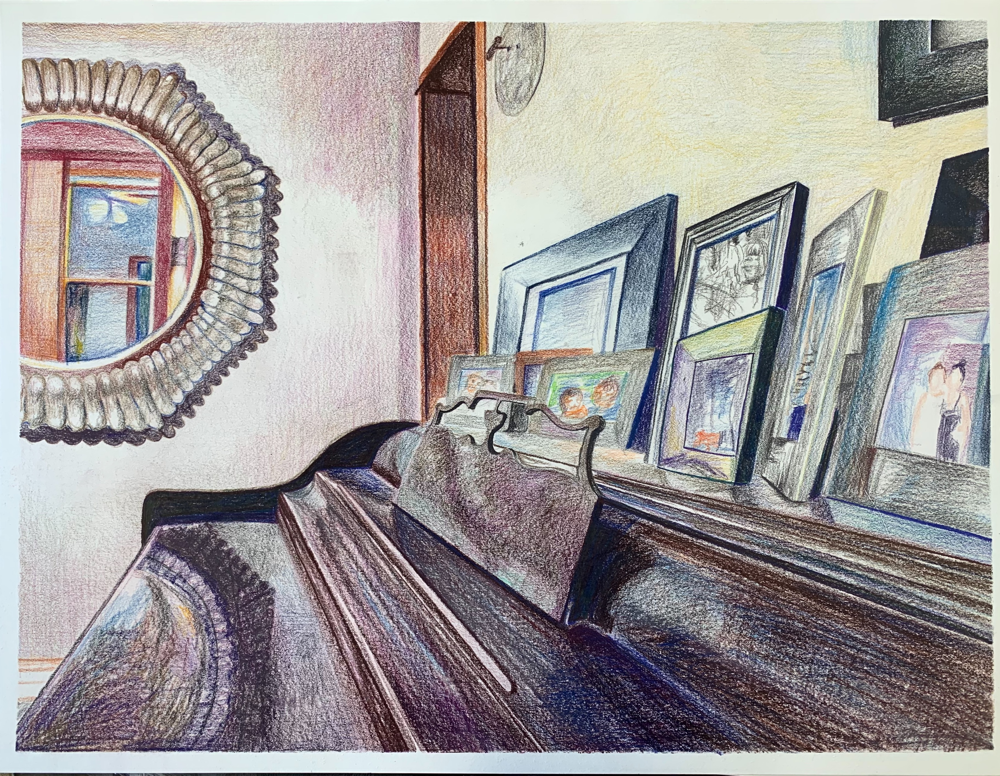

Hi! My name is Sophia and this is my awesome webpage. I love to sing, act, and draw. I have displayed some of my visual art pieces from high school below :) I hope you enjoy!
 

I am currently a Social Media and Digital Strategy Major with a minor in acting. Web Development has taught me a lot about web design. I cannot believe how much goes into building a website. It's tricky, but the process is pretty fun when I can actually figure out what I'm doing, haha.